内山観音/大分県豊後大野市
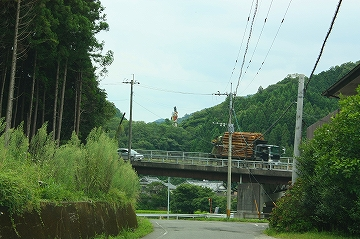
県下最大の観音像を擁する豊後大野市、そこにはもうひとつの巨像が存在するのであった。
向かう先は内山観音、正式には蓮城寺というお寺。
県内屈指の名刹といって間違いないだろう。
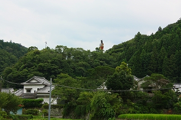
そんな名刹の裏山に巨像がチラチラと見え隠れしているのだが、まずは本堂に御挨拶。
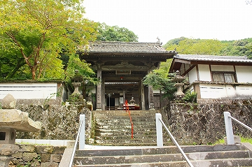
このお寺は欽明15（554）年に開創された県下最古のお寺だという。
仏教公伝直後の、インディーズからメジャーデビューして最初のアルバム発売直後、位のホットな時期に創られたお寺、ということになろう。もっとも平安時代創建説もあるが、いずれにせよ超古〜いお寺、なのである。
境内には石の宝塔や廻り経蔵、その他様々な歴史を感じさせる仏像などがあり、その多くが文化財に指定されている。
公開はしていないが大蛇の尻尾の骨、なんていうキテレツな寺宝まであるそうな。
とはいえ観光バスがバンバン乗り付けて門前にたっちゃんの漬物屋とかが並ぶようなお寺ではなく、ひっそりとした雰囲気なのである。
本堂前にあるおびんずる様
赤いヨダレ掛けの下にある前掛けが花札の模様なところが渋いですね。あと眉尻が凄いすね。
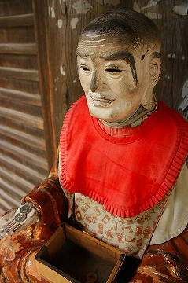
本堂の脇の半地下にはお砂踏み霊場が。
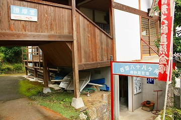 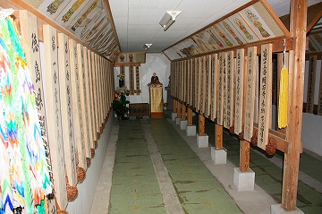
で、本堂から少し離れたところには薬師堂がある。
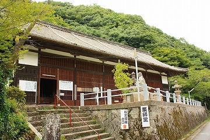
この寺の最大の御自慢、本邦唯一の千体薬師である。
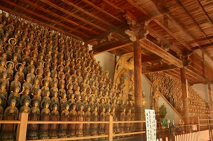
中央の薬師如来と日光月光菩薩の左右にずらっと並ぶ薬師像。
まさに壮観の一言に尽きる。
室町期に造られたものだという。ちなみに奈良、京都、大宰府、豊後の仏師が製作に関係しているそうだ。
そんなところにもこの寺と中央のぶっといパイプ具合が伺える。
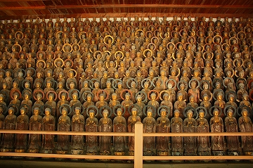 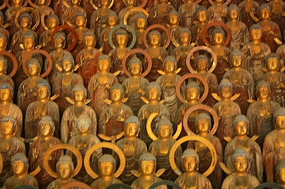
この寺にはこれだけの数の仏像をそろえるだけの財力があった、ということだ。
さて、千体薬師にすっかり魅了されたら、いよいよお目当ての巨像との対面である。
お寺の裏手にある小高い丘の上に件の巨像は存在する。
極彩色の女性の像だ。台座には般若姫とある。
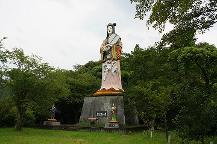
大きさは台座込みで25メートル。平成3年建立。
一説によるとDAIGOのおじいちゃんがばら撒いた「ふるさと創生資金」を使って造ったとか。
そういう意味では王道中の王道を行くバブル遺産、といえよう。
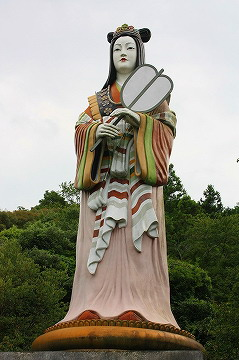
さて、この巨大なお姫サマは一体誰なんだろう？
少し調べてみたら、これが中々面白いハナシなので少し長くなるが付き合ってくださいな。
むか〜しむかし、時は大和朝廷の頃、奈良に玉津姫という女性がおりました。その姫が（色々あって）「豊後国の炭焼き小五郎を探せ。それがお前の伴侶だ。」とのお告げを受け、豊後の地にやってきました。そこで（色々あって）炭焼き小五郎を見つけ、結婚を申し込むのですが、小五郎は稼ぎがないのを理由に断ります。
で、玉津姫が黄金を持たせてお遣いに行かせると、小五郎は黄金を鳥に投げつけてしまう始末。小五郎いわく「こんなものなら裏の淵にいくらでもある」。行ってみるとそこは黄金の湧き出る淵だったのです。
黄金を手にした二人は結婚し、豊後一の金持ちとなり真名野長者と呼ばれるようになったとさ。
そのうち二人の間には女の子が産まれました。般若姫と名付けられたその子は成長するにつれ、たいへんな美人と評判になり、都の貴族達にもプロポーズされることもしばしば。しかし長者は大事な跡取り、と縁談を断ってきました。
しかしある時、ひとりの皇子が身分を隠して長者の屋敷の下働きとして潜入し（色々あって）見事般若姫と結婚することになりました。
ところが皇子の兄の逝去により都に戻る事に。実はこの皇子こそが後の用明天皇だったのです。
その時、皇子の子を身ごもっていた般若姫はこの地に残り、玉絵姫を出産しました。
その後、皇子に会うべく娘の玉絵姫を真名野長者に預け都に向かっていったのです。
都へと向かう旅の途中で休んだのが国東沖の姫島。井戸に柳の楊枝を刺したのが山口県の柳井市、と、まああっちこっちにエピソードを残していった般若姫。どんだけ影響力が強いんでしょうねえ。フフフ。
しかしこの航海の途中、暴風雨に巻き込まれ遭難、姫は齢19にて亡くなってしまうのでありました。
あわれ悲劇のヒロイン般若姫。
美人薄命とはこれいかに〜。ベベンベン…
…と、まあ、こうして都と豊後と瀬戸内海を舞台にしたロマンス大河物語は幕を閉じるのである。
ところがこの話にはとんだエピローグが付いてくるのだ。
早世した姫を弔うためにこの真名野長者が中国より蓮城法師を招聘。ここの蓮城寺を建立する。
さらに蓮城法師は供養のため石仏を彫ったのだが、それが現在の臼杵の石仏なんだとさ、めでたしめでたし。
なんか色んなものがあまりにも見事に繋がりすぎてホントかよ〜と思ってしまうのだが、まあ、そこは「伝説」ですから話半分に聞いておくとしても、広範な舞台、親子三代にわたる壮大なストーリー、登場人物の大物っぷり、話の荒唐無稽っぷりなどなど…かなり良くできた伝説だと思う。
一応人物相関図などを載せときましょう。
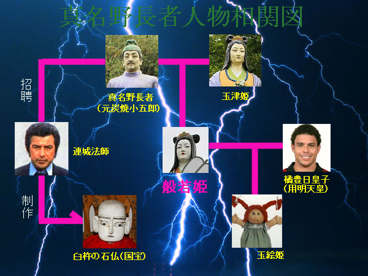
※顔のわからない登場人物は何となくイメージで画像を充ててみました。他意はないからね！
改めてその悲劇のヒロインである般若姫を見上げてみる。
絶世の美女との設定どおり、20メートル級のコンクリの巨像としては類を見ない絶世の美女に仕上がっている。
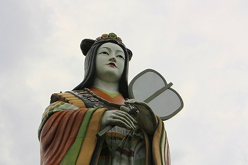
ただし手の内側や顎の下あたりに若干の翳りが伺える。
ふるさと創生資金はハコモノやモニュメントといった物理的なモノに使途が限定されていたという。
従ってお化粧直しなどのランニングコストはふるさと創生資金からは捻出されないのであろう。
ましてや当時三重町の象徴として造った巨像だが、合併して豊後大野市となった今ではその存在意義も薄れてしまい、微妙にオジャマ施設と化している感がなくもない。
巨大お姫サマの両サイドには御両親である元炭焼小五郎改め真名野長者と玉津姫の像。
真名野長者伝説前半の主人公である。
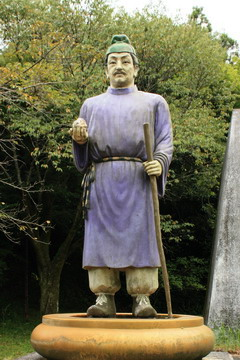 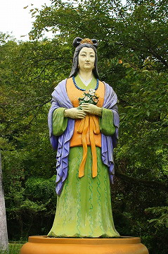
般若姫像の裏手に回ると台座の扉が開いていた。
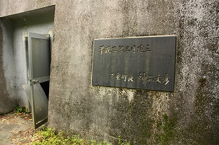
中に何があるのだろう、と覗いてみると…
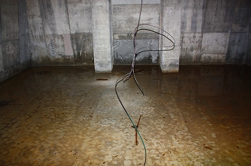
…水が溜まってました。
にしても決して大きくない町なのに20メートル超級の巨像が２体もあるというのは凄いことだ。
先の稲積昇龍大観音はともかく、ここの般若姫像はそれなりの歴史と由来があるのがポイントだ。
般若姫の近くには石仏が並んでいた。これは千手観音、なのだろう。
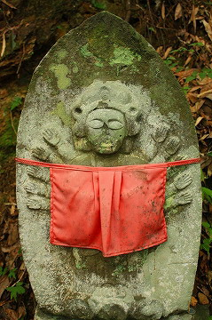
薬師堂の近くには真名野長者伝説に出てくる黄金が湧き出てくる金亀ヶ淵があった。
ひょっとして今でも黄金が…と0.1％ほど期待しつつ覗き込むも、淵では伝説のことなど全く意に介さないチビッコ達が気持ちよさそうに川遊びをしていたのであった。
2008.08.
珍寺大道場 HOME